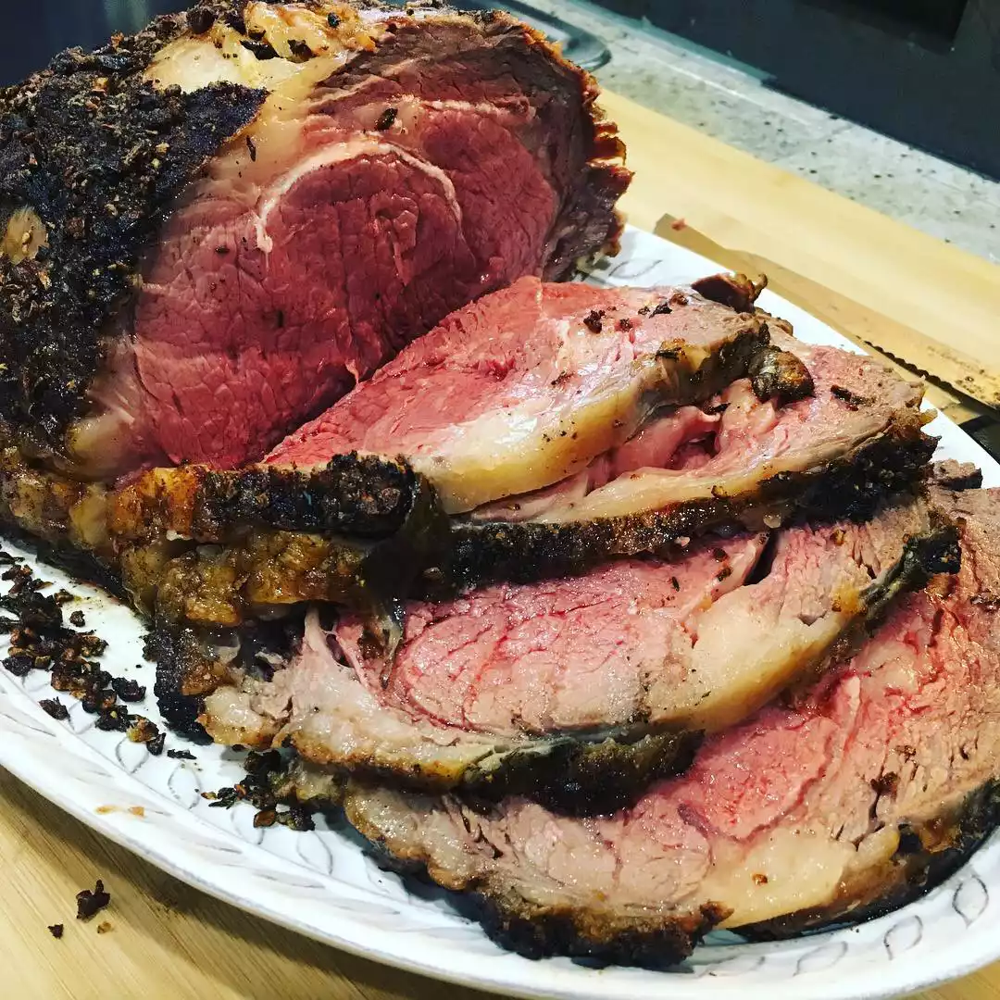

RECIPES

Garlic Prime Rib
A tasty prime rib marinade made with olive oil, garlic, and thyme. I was trusted with this recipe but I can't keep it to myself!
ingredients
- 1 (10 pound) prime rib roast
- 10 cloves garlic, minced
- 2 tablespoons olive oil
- 2 teaspoons salt
- 1 teaspoon dried oregano
- salt and pepper to taste
- 1 cup shredded mozzarella chees
steps
- Gather all ingredients.
- Set an oven rack about 6 inches from the heat source and preheat the oven's broiler. Cut loaf into ten 1-inch slices.
- Mix butter, garlic, oil, oregano, salt, and pepper together in a bowl; spread butter mixture on one side of each slice of bread; arrange bread slices, butter-side up, in a single layer on a baking sheet.
- Cook under the preheated broiler until slightly brown, checking frequently so they do not burn, about 3 minutes.
- Top bread slices with cheese and return to broiler until cheese is slightly brown and melted, about 2 minutes.
- Serve hot.